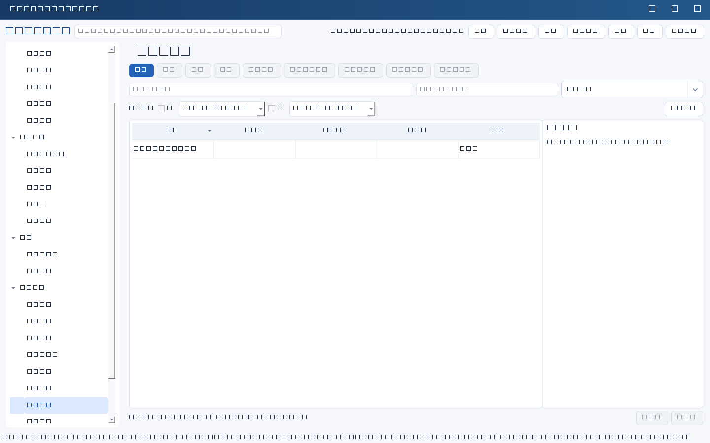
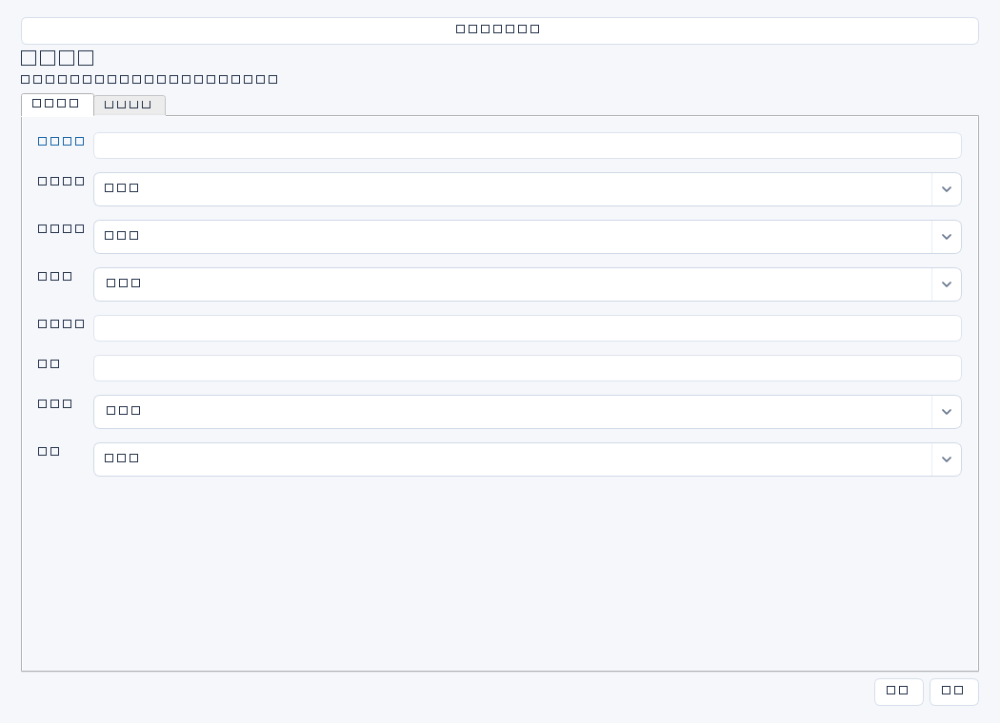

记录生产系统或基础设施变更的范围、窗口、测试、备份、回退和验证依据，降低计划操作带来的服务风险。本模块记录审批事实，不代替真实变更审批和实施平台。


操作步骤与资料获取
- 取得变更需求、影响分析与技术方案，核对目标系统、关联项目/事件和依赖方，明确实施窗口。
- 在测试环境验证操作步骤和回退方案，保存测试报告；核实备份可用性，而不只是填写“已备份”。
- 将计划窗口、影响、回退判据提交组织规定的批准人，取得明确批准材料后再在外部实际执行。
- 按窗口实施并监测关键指标，满足回退判据时依方案处置；保存操作日志、业务验证和最终结果后更新状态。
字段逐项说明
| 操作 / 字段 | 详细说明 |
|---|---|
| 名称 | 变更标题，强制非空；建议系统＋变更动作＋版本。 |
| 关联ID | 关联需求、项目、事件等任一业务记录；非空时强制引用存在且未归档记录。 |
| 系统ID | 主要受影响系统；非空时强制引用有效systems记录，其他受影响系统写影响范围。 |
| 执行人 | 实际实施人员姓名；填写姓名不代表已获生产访问权限或完成审批。 |
| 计划窗口 | 实施起止时间、时区和关键节点；自由文本，不受日期字段校验，建议写完整日期与时间。 |
| 影响范围 | 列服务中断、接口、用户范围、预计持续时间和通知对象；与业务确认可接受窗口。 |
| 测试证据 | 测试环境、版本、用例和结果及报告位置；普通文本，保存时不强制必填，但管理上建议审批前具备。 |
| 备份 | 写备份对象、时间点、位置、校验结果和恢复责任人；不存备份密钥，不会自动备份。 |
| 回退判据及步骤 | 写何种失败触发回退、最晚决策时间、步骤、责任人和回退验证；避免只有“有问题就回退”。 |
| 批准人 | 记录实际批准人员姓名；建议同时在测试证据或验证证据注明批准单号与位置，不是电子审批动作。 |
| 状态 | 使用通用状态表示准备、执行或结束；没有内置先批准后执行的强制状态门禁。 |
| 验证证据 | 记录实施后监控、业务交易核对、版本和最终结论，以及操作日志和批准材料位置。 |


示例（仅演示）
| 操作 / 字段 | 详细说明 |
|---|---|
| 名称 | ERP接口连接池补丁V1.2 |
| 关联ID | |
| 系统ID | |
| 执行人 | 陈晨 |
| 计划窗口 | 2026-04-18 22:00—23:00，北京时间；22:30前决定是否回退 |
| 影响范围 | 仓储接口暂停不超过15分钟，仓储部已确认窗口 |
| 测试证据 | TEST-0416：压力与异常重试用例通过；受控资料库/变更/CHG0418 |
| 备份 | 实施前保存配置和旧版本包，校验摘要已核对；恢复责任人陈晨 |
| 回退判据及步骤 | 错误率连续5分钟超过1%或22:30未恢复则停新版本、还原旧包与配置、启动并核对交易 |
| 批准人 | 李明 |
| 状态 | 未开始 |
| 验证证据 | 批准单CHG-20260418已存受控目录；实施后补充交易验证与监控截图 |
形成闭环
- 实施后核对系统健康、关键业务交易和下游接口，记录实际窗口及最终是否回退。
- 验证失败则记录回退过程和后续任务，不以“操作完成”替代业务恢复。
- 补齐批准、测试、备份、实施和验证链条后人工更新状态。
常见误区与边界
- 有备份但未验证可读或无法满足回退时间。
- 批准人填了姓名就认为审批已完成；软件没有验证实际批准材料。
- 以为点击保存会下发补丁、执行脚本或创建备份。